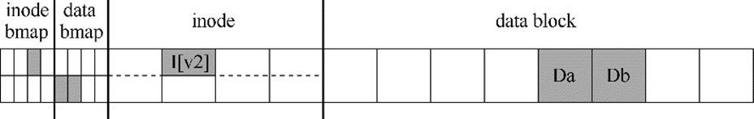
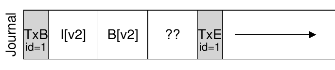
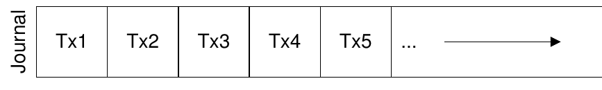

向勇 陈渝 李国良 任炬
2024年秋季
课程幻灯片列表
提纲
1.2 崩溃场景
如何在出现断电（power loss）或系统崩溃（system crash）的情况下，更新持久数据结构？
崩溃可能导致磁盘文件系统映像中的文件系统数据结构出现不一致性。如，有空间泄露、将垃圾数据返回给用户等
崩溃一致性问题（crash-consistency problem）也称一致性更新问题（consistent-update problem）
考虑一个应用以某种方式更新磁盘结构：将单个数据块附加到原有文件。
lseek()
考虑一个应用以某种方式更新磁盘结构：将单个数据块附加到原有文件
1.1 崩溃一致性
在文件操作过程中可能会发生崩溃，从而干扰磁盘的这些更新。

只将数据块（Db）写入磁盘
只有更新的inode（I[v2]）写入了磁盘
只有更新后的位图（B [v2]）写入了磁盘
inode（I[v2]）和位图（B[v2]）写入了磁盘，但没有写入数据（Db）
写入了inode（I[v2]）和数据块（Db），但没有写入位图（B[v2]）
写入了位图（B[v2]）和数据块（Db），但没有写入inode（I[v2]）
早期的文件系统采用了一种简单的方法来处理崩溃一致性。
检查超级块是否合理，主要是进行健全性检查
注：可靠性高的文件系统，会有多处放置超级块备份的磁盘扇区。
扫描inode、间接块、双重间接块等，以了解当前在文件系统中分配的块，生成正确版本的分配位图
检查每个inode是否存在损坏或其他问题
inode链接计数表示包含此特定文件的引用（即链接）的不同目录的数量。
两个不同的inode引用同一个块的情况
在扫描所有指针列表时，检查坏块指针。如果指针显然指向超出其有效范围的某个指针，则该指针被认为是“坏的”。
fsck不了解用户文件的内容，但目录包含由文件系统本身创建的特定格式的信息。对每个目录的内容执行额外的完整性检查。
3.2 数据日志（data journaling） 3.3 日志文件系统的性能优化
预写日志（write-ahead logging）
3.1 日志
3.3 日志文件系统的性能优化
磁盘内部可以（1）写入TxB、I[v2]、B[v2]和TxE，然后（2）才写入Db。

为避免该问题，文件系统分两步发出事务写入。
当这些写入完成时，文件系统会发出TxE块的写入，从而使日志处于最终的安全状态：
当前更新文件系统的协议如下，3个阶段中的每一个都标上了名称。
崩溃发生在Journal Commit完成前：文件系统可以丢掉之前写入的log。由于磁盘具体位置的bitmap，inodes，data blocks都没变，所以可以确保文件系统一致性。
崩溃发生在Journal Commit后，Checkpoint之前：文件系统在启动时候，可以扫描所有已经commited的log，然后针对每一个log记录操作进行replay，即recovery的过程中执行Checkpoint，将log的信息回写到磁盘对应的位置。这种操作也成为redo logging。
崩溃发生在Checkpoint完成后：那无所谓，都已经成功回写到磁盘了，文件系统的bitmap、inodes、data blocks也能确保一致性。
在此更新序列期间的任何时间都可能发生崩溃。
太多写，慢！
数据+元数据日志 --> 元数据日志
3.1 日志 3.2 数据日志（data journaling）

什么时候应该将数据块 Db 写入磁盘？
通过强制首先写入数据，文件系统可保证指针永远不会指向垃圾数据。
文件系统的示意图